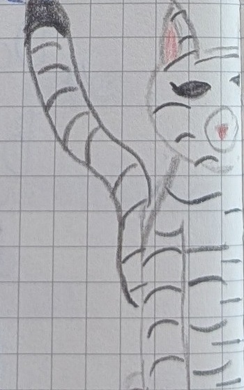
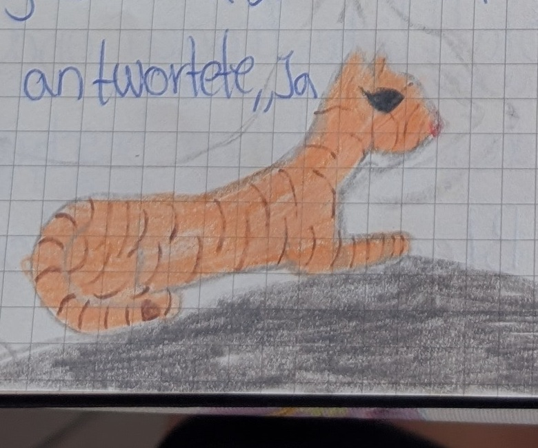
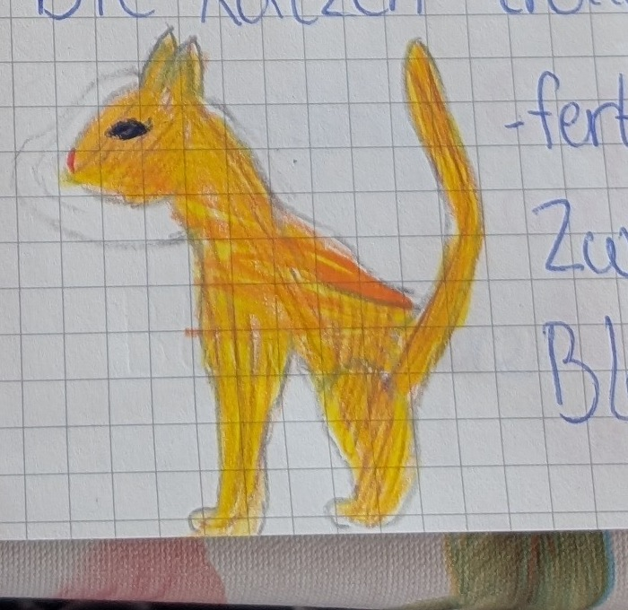

„Blaustern“, sagte Schneepfote, „warum dürfen wir nichts machen?“ „Geht zu den Ältesten und löst Goldhalm und Moosfell ab!“, entschied Blaustern, und Schneepfote und Blütenpfote liefen zu den Ältesten. „Dachs!“, schrie Sandpfote, die vorgerannt war, und sprintete zurück. „Dachs, Blaustern, die Krieger müssen einen Schutz bilden!“, keuchte Blattpfote. Blaustern sprang auf einen Baumstumpf und rief: „Lichtclan, Jungen in die Mitte, darum die Ältesten, darum die Schüler, und dann Krieger und Königinnen!“ Sofort bildeten die Katzen schützende Kreise um die Schwächeren. Blaustern stellte sich dem Dachs entgegen, und die beiden kratzten und bissen sich gegenseitig. Der Dachs war groß und schwer, doch Blaustern war schnell und wendig.

Blaustern sprang dem Dachs auf den Rücken und zerkratzte seine Augen mit den Hinterbeinen. Schließlich lief sie zurück zu ihren Katzen, und der Dachs flüchtete. Blaustern hatte Kratzer, hatte aber genug Kraft, um den Clan weiter anzuführen. Irgendwann schlüpfte der Lichtclan durch einen hohen Brennnesselbusch. „Wow“, sagte Zwergpfote überwältigt, „das ist perfekt.“ „Du hast recht, Zwergpfote, das ist unser neues Lager“, rief Blaustern und sprang auf den höchsten Stein, den sie finden konnte. „Alle Katzen, die alt genug sind, ihre eigene Beute zu machen, sollen sich … äh, ähm, unter dem neuen Hochfelsen zu einer Clanversammlung einfinden“, rief sie.
Der Lichtclan stellte sich unter den Hochfelsen und lauschte, was Blaustern sagen wollte. „Das wird unser neues Lager, und ihr werdet neue Bauten einrichten. Dorthin, neben den Eingang, kommt der Kriegerbau auf die eine Seite und auf die andere Seite der Schülerbau. Ganz hinten, da kommt der Ältestenbau hin, und da an der Seite kommt die Kinderstube“, erklärte die Anführerin. „Und noch etwas: Blattpfote, Zwergpfote und Sandpfote haben den Clan beschützt, gewarnt und ihm geholfen. Blattpfote, du hast die Flut gesehen und hast rechtzeitig Bescheid gesagt. Bist du bereit, dem Clan als Kriegerin zu dienen?“ „Ja, Blaustern“, erwiderte Blattpfote. „Dann wirst du ab heute den Namen Blattliebe tragen und den Clan mit deinem Leben beschützen“, sagte Blaustern, und Blattliebe nickte.
„Zwergpfote, du hast uns aus schwierigen Situationen geholfen und hast rechtzeitig Bescheid gesagt, als Gefahr drohte. Bist du bereit, dem Clan als Kriegerin zu dienen?“, sagte Blaustern, und Zwergpfote bestätigte: „Ja, Blaustern.“ Die Anführerin sagte: „Dann wirst du ab heute den Namen Zwergsonne tragen.“ Zwergsonne lief zu Blattliebe und hörte, wie Blaustern zu Sandpfote sagte: „Sandpfote, du hast uns früh gewarnt, als der Dachs kam, und so konnten wir uns schützen. Bist du bereit, dem Clan als Kriegerin zu dienen?“, fragte Blaustern, und Sandpfote antwortete: „Ja, Blaustern.“ „Dann wirst du ab heute den Namen Sandsturm tragen“, entschied Blaustern. „Dann räumt eure Sachen in den Kriegerbau.“



„Moment!“, rief Silbermond und sprang auf ihre Pfoten. „Ich wollte noch etwas mitteilen: Ich werde als Kriegerin und als Königin zurücktreten und in den Ältestenbau ziehen.“ Blaustern nickte respektvoll und sagte: „Wir werden deine Entscheidung mit Respekt annehmen und dich als Älteste ehren.“ „Danke, Blaustern“, sagte Silbermond und lief zu den anderen Ältesten. „Viel Erfolg bei eurer Nachtwache, ihr drei, und Löwenherz ist der neue zweite Anführer“, sagte Blaustern. Die Katzen trotteten zu ihren neuen, halbfertigen Bauten, und Zwergsonne, Sandsturm und Blattliebe legten sich vor dem Eingang zum Lager nieder, bereit, die ganze Nacht zu schweigen. Blattliebe legte sich vor den Eingang, Sandsturm vor die Kinderstube und Zwergsonne in die Nähe des Hochfelsens.
Fortsetzung folgt …